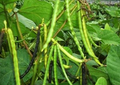

<!DOCTYPE html>
<html>
<head>
	<meta charset="utf-8">
	<meta name="viewport" content="width=device-width, initial-scale=1">
	<title>Crops</title>
	<style>
		#crop-grid {
    display: grid;
    grid-template-columns: 1fr 1fr 1fr; /* Three equal-width columns */
    gap: 20px; /* Adjust the gap as needed */
}

.left-section {
    grid-column: 1; /* This will place it in the first column */
}

.middle-section {
    grid-column: 2; /* This will place it in the second column */
}

.right-section {
    grid-column: 3; /* This will place it in the third column */
}

	</style>
</head>
<body>
	
	<div id="crop-grid">
    <div class="left-section">
        <aside class="crop">
            
            <h3>Paddy</h3>
            <p>Paddy, small, level, flooded field used to cultivate rice in southern and eastern Asia. Wet-rice cultivation is the most prevalent method of farming in the Far East, where it utilizes a small fraction of the total land yet feeds the majority of the rural population. Rice was domesticated as early as 3500 BC, and by about 2,000 years ago it was grown in almost all of the present-day cultivation areas, predominantly deltas, floodplains and coastal plains, and some terraced valley slopes.</p>
		

<p>
Many paddies are flooded by rivers and rainfall during monsoon season, while others must be irrigated. The paddies have an impermeable subsoil and are bordered by earthen bunds to hold an average of 4–6 inches (10–15 centimetres) of water in the field for three-quarters of the growing season. In all countries, excluding India, paddies are worked by family labour alone and by the same methods as were used 2,000 years ago: hand cultivation with hoe and spade, or water-buffalo-, horse-, or ox-drawn plough with metal share.</p>
        </aside>
    </div>
    
    <div class="middle-section">
        <aside class="crop">
            
            <h3>BlackGram</h3>
            <p>Black gram (Vigna Mungo L.), is one of the important pulses crop, grown throughout the country. The crop is resistant to adverse climatic conditions and improve the soil fertility by fixing atmospheric nitrogen in the soil. It has been reported that the crop produces equivalent to 22.10 kg of N/ha., which has been estimated to be supplement of 59 thousand tonnes of urea annually. The pulse 'Black gram' plays an important role in Indian diet, as it contains vegetable protein and supplement to cereal based diet. It contains about 26% protein, which is almost three times that of cereals and other minerals and vitamins. Besides, it is also used as nutritive fodder, specially for milch animals.</p>
        </aside>
    </div>

    <div class="right-section">
        <aside class="crop">
        	
        	<h3>Corn</h3>
        	<p>Maize also known as corn in North American and Australian English, is a cereal grain first domesticated by indigenous peoples in southern Mexico about 10,000 years ago. The leafy stalk of the plant gives rise to inflorescences (or "tassels") which produce pollen and separate ovuliferous inflorescences called ears that when fertilized yield kernels or seeds, which are botanical fruits. The term maize is preferred in formal, scientific, and international usage as the common name because it refers specifically to this one grain whereas corn refers to any principal cereal crop cultivated in a country. For example, in North America and Australia corn is often used for maize, but in England and Wales it can refer to wheat or barley, and in Scotland and Ireland to oats.</p>

    </div>
</div>


</body>
</html>